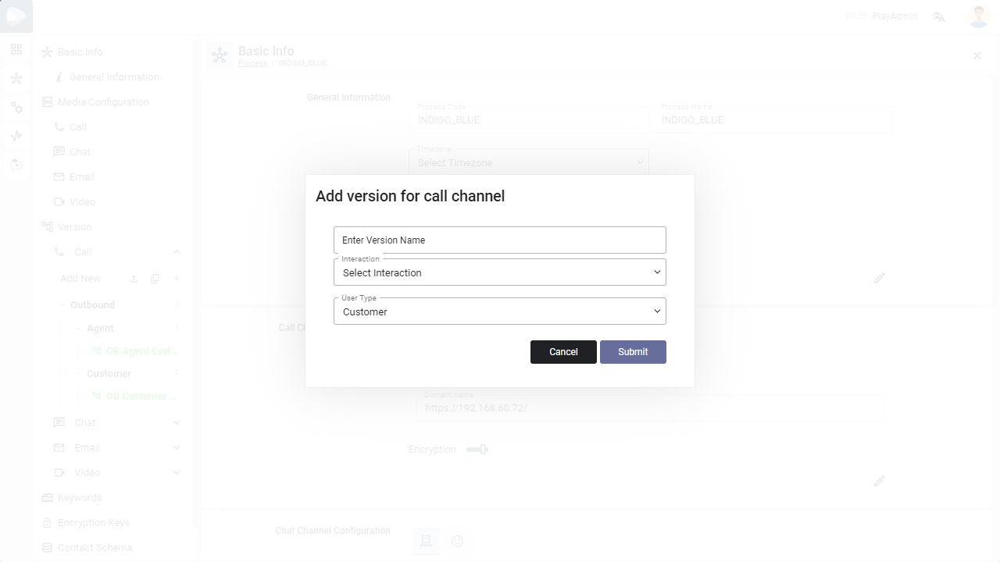
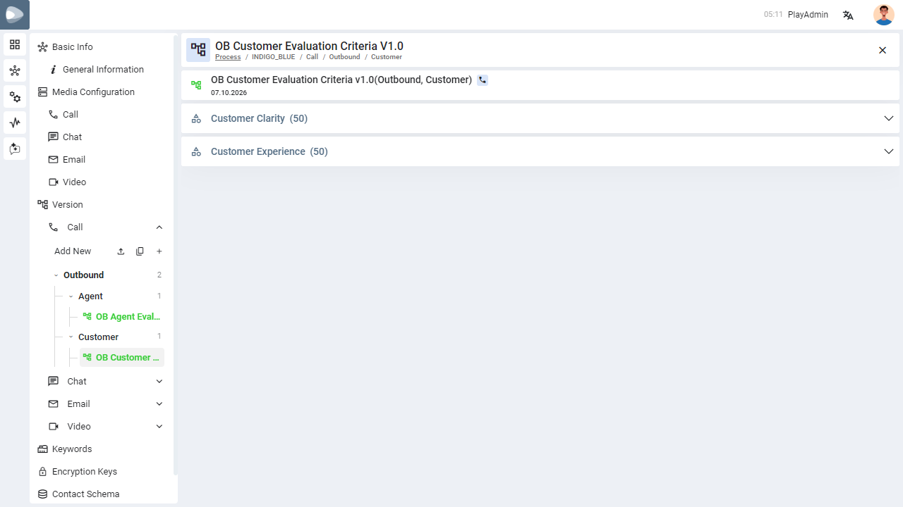
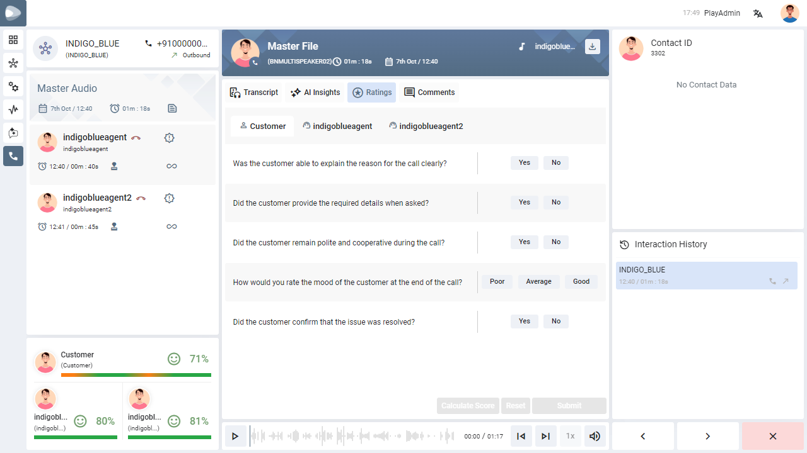
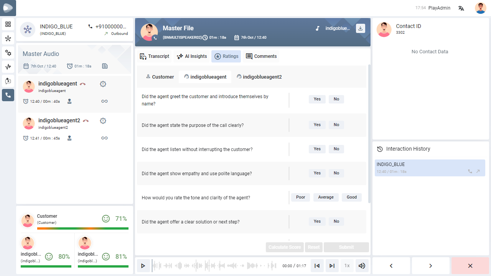

Agent and Customer Wise Questions
Keep the questions about the agent and the questions about the customer in separate rating versions, so each person on a recording is rated only on what applies to them.
01
What this feature does
A short primer before you configure anything.
A rating form used to be one list of questions for the whole recording. Now every version belongs to a User Type — Agent, Customer or Both — and the right questions are shown for the right person.
- Agent versions hold questions about the agent — greeting, listening, empathy, offering a solution.
- Customer versions hold questions about the customer — explaining the reason for the call, giving the required details, staying cooperative.
- Both is for a version whose questions apply to either person.
When a reviewer opens the Ratings tab of a recording, there is a tab for the customer and one tab for each agent who took part, and each tab shows its own questions.
02
Where versions are kept
The version menu in the process settings.
Open Settings → Process, choose your process, and look under Version in the left menu. Versions are organised as a tree, with a count beside each level:
Channel (Call, Chat, Email, Video) → Interaction (Inbound / Outbound) → User Type (Agent / Customer) → the versions themselves.
Next to Add New there are three small icons: import a version, copy an existing version, or add a new one with the + icon.
03
Add a version for the agent or the customer
What to do, step by step.
-
Open the channelUnder Version, click the channel (for example Call) to expand it.
-
Click + next to Add NewThe Add version dialog opens for that channel.
-
Name itType a clear name in Enter Version Name, for example OB Agent Evaluation Criteria.
-
Choose the interactionSelect Inbound or Outbound in Interaction.
-
Choose the User TypeSelect Agent, Customer or Both. This decides who the questions are asked about.
-
Submit, then add categories and questionsClick Submit. The version appears in the tree under its interaction and user type; open it to add its categories and questions.
The Copy and Import dialogs have the same User Type choice, so a copied or imported version can be given a different audience.

04
Example: one outbound call, two versions
How the questions differ.
A process keeps two versions for outbound calls — one for the agent and one for the customer. Each has its own categories and questions.

| Version | User Type | Sample questions |
|---|---|---|
| OB Agent Evaluation Criteria | Agent | Did the agent greet the customer and introduce themselves by name? · Did the agent listen without interrupting the customer? · Did the agent offer a clear solution or next step? |
| OB Customer Evaluation Criteria | Customer | Was the customer able to explain the reason for the call clearly? · Did the customer provide the required details when asked? · Did the customer confirm that the issue was resolved? |
05
What reviewers see
The Ratings tab of a recording.
Open a recording and click Ratings. Tabs run across the top: Customer, followed by one tab per agent on the call. Click a tab to see that person’s questions.


06
Good to know
Choosing the right User Type.
| If the questions are about… | Choose |
|---|---|
| The agent’s behaviour, language or process steps | Agent |
| The customer’s clarity, cooperation or satisfaction | Customer |
| Something that fits both, such as overall call quality | Both |
Versions created before this feature keep working: records saved earlier and new records both display correctly.